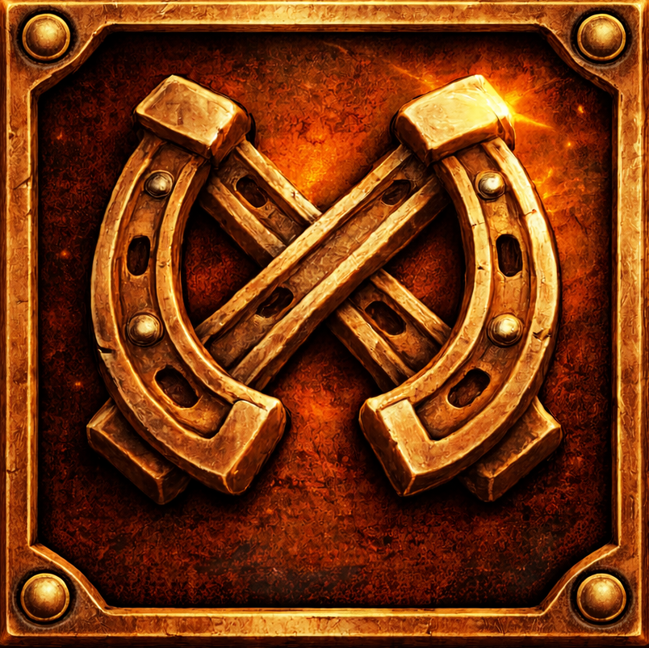
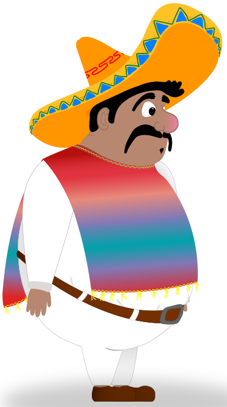
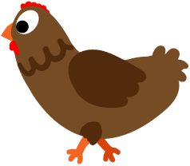
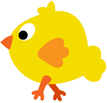
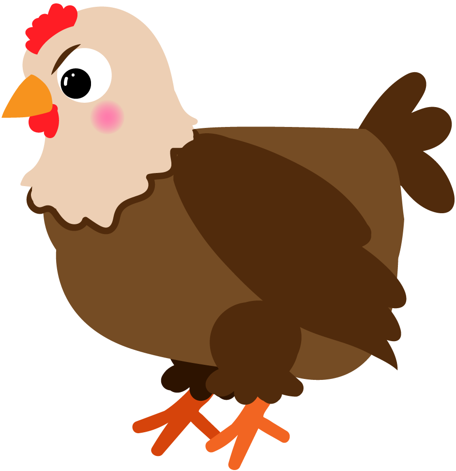
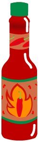
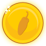

In El Pollo Loco steuerst du Pepe durch eine lebendige Wüstenlandschaft, in der Señora Gallina und ihre Hühner die Gegend unsicher machen. Mit schnellen Sprüngen, geschicktem Ausweichen und gutem Timing stellst du dich den Hühnern, sammelst Münzen und nutzt Salsaflaschen, um dich zu verteidigen. Der Höhepunkt erwartet dich im Aufeinandertreffen mit Señora Gallina – sei gewarnt, viele Reisende sind bereits an ihr gescheitert. Nimm die Herausforderung an und befreie die Wüste von der Herrschaft der Hühner.

Unser mutiger Held Pepe, den du bei der Befreiung der Wüste begleiten wirst. Achte auf seine Energie, diese spiegelt Pepes Zustand wider. Fällt sie auf 0, musst du das Abenteuer von vorne beginnen.

Sie gehören zu Señora Gallinas Gefolgschaft. Bei Kollision erleidet Pepe Schaden. Du kannst sie mit einem geschickten Sprung von oben ausschalten oder mit einem gezielten Wurf einer Salsaflasche aus der Ferne eliminieren.

Diese kleinen frechen Hühner sind nicht weniger gefährlich. Bei Kollision erleidet Pepe gleichen Schaden wie bei den etwas größeren Hühnern. Auch sie kannst du mit einem Sprung von oben oder einem Treffer mit der Salsaflasche ausschalten.

Der Endboss, die gefürchtete Señora Gallina. Vorsicht! Sie lässt sich nicht durch einen Sprung von oben besiegen. Sie ist nur durch Salsaflaschen verwundbar. Zudem verursacht ein Treffer von ihr deutlich mehr Schaden. Sei gewarnt, sobald sie dich erblickt, wird sie keine Ruhe geben, bis sie dich niedergetrampelt hat.

Halte Ausschau nach diesen besonderen Flaschen. Sie beinhalten eine feurige Salsasoße, Señora Gallinas Schwäche und somit das einzige Mittel, um sie zu besiegen. Sie sind in der gesammten Spielwelt verteilt. Aber Achtung! Ihre Anzahl ist begrenzt.

Diese Münzen gehörten einst mutigen Abenteurern wie Pepe, die versuchten, die Wüste von Señora Gallina und ihrer Hühnerarmee zu befreien. Viele von ihnen sind gescheitert und ließen ihre Spuren im Sand zurück. Sammle die Münzen ein, um ihren Mut zu ehren und dich Schritt für Schritt auf die bevorstehende Herausforderung vorzubereiten.
Du kannst unseren Helden ganz einfach über die Tastatur steuern.
Evgenij Liske Mooswiesenstraße 11a 81245 München
Impressum erstellt mit kostenlosem Impressum-Generator von impressum-generator.com.